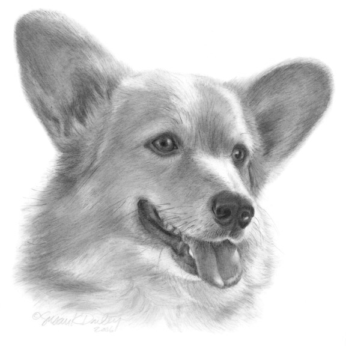

The Ancestral Home of the Croissanwich®
Eating Valencia oranges with
Wizardishungry
Introduction
This is the online home of Jon Williams, a Brooklyn, NY-based Open Source developer & video/music magician.
What have you been up to lately?
Usually, my del.icio.us or Friend Feed aggregator (feed) are pretty good indicators of what I've been thinking about. Here's some stuff that I did recently pulled from there
What do you do all day?
I've been doing a lot of work in Symfony for the past two years and continue to do so. Currently I'm working an open source BitTorrent tracker (sfLimeTracker) written in the Symfony PHP framework for Limewire. I also try to contribute patches and support to Symfony and other free software projects as well as do internal web stuff at Limewire. Go look at my LinkedIn profile.
So I hear you do video stuff…
I did video for Excepter's marathon 17 hour 2008 election show ("VETO VOTE") at Monkeytown in Williamsburg, Brooklyn as well as a mess of more recent shows. I have a YouTube channel with some other stuff. Here's my most recent show.
I'm still bored, amuse me
You might want to go look at my tumblr. Also, I have a new pet chicken blog here: KHIKIN.com.
Is that a Corgi?
Yes, that is a Pembroke Welsh Corgi. I had two of them growing up and my parents have a pair back home. I remain a big fan.
OMG more Widgets!

www.flickr.com
|
Things That Formerly Existed
Thanks to the wonders of the Wayback Machine, you can see a few interesting snapshots of this page:
Blog frontpages layout
All of the content that was available here was moved to a WordPress.com blog after I decided it was too tedious to maintain a blog install for what was eseentially a infrequently-updated “Tumblog” (I do not enjoy writing) and grey hat Technorati optimzation experiment. I promise I'll get the "Oregon Trail of Animated Gifs" up on my site somewhere.
Older static pages
- Oct 2006 Last Static layout (javascript+color+css intensive)
- Nov 2005 Classic bigsplash with alpha-channel png
- Jul 2004 Classic layout with different
glyphs choice of random characters was probably influenced by the font support in my then-current Linux
distribution.
- Broken seizure inducing subpage (a little better in Oct 2004)
- Mar 2004 Broken version of the classic blink+huge png layout
- Aug 2003 Slightly more annoying CSS
- Apr 2003 DHTML+CSS+>BLINK>
- Feb 2003 Early synth experiment mp3 page
My pages etc. predating this domain
Like you'd want embarassing shit from when you were young available for future employers and spouses?
-Jon Williams
HTML&CSS stolen (with love) from svn-book (creative commons license 2.0 [attrib])